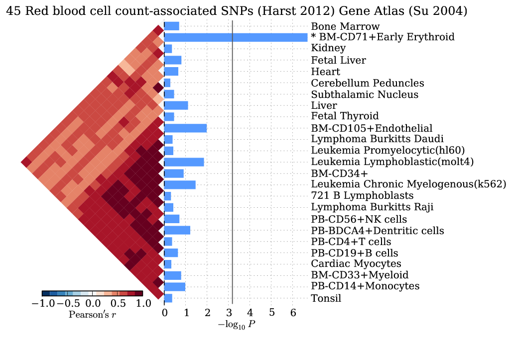

Output Visualizations¶
View enrichment of tissue-specific gene expression¶

A horizontal bar plot of negative log10 p-values for a test of 37 LDL-associated SNPs for enrichment of tissue-specific expression in profiles of 79 human tissues.
python bin/snpsea-barplot out
View the most specifically expressed gene for each SNP-tissue pair¶

A heatmap exposing the contributions of specifically expressed genes within each SNP linkage interval to the specificity scores of each tissue.
python bin/snpsea-heatmap out
View the type 1 error rate estimates for each tissue¶

A scatter plot of the observed proportion of p-values under various thresholds after repeating the analysis with 10,000 random SNP sets.
Rscript bin/snpsea-type1error out